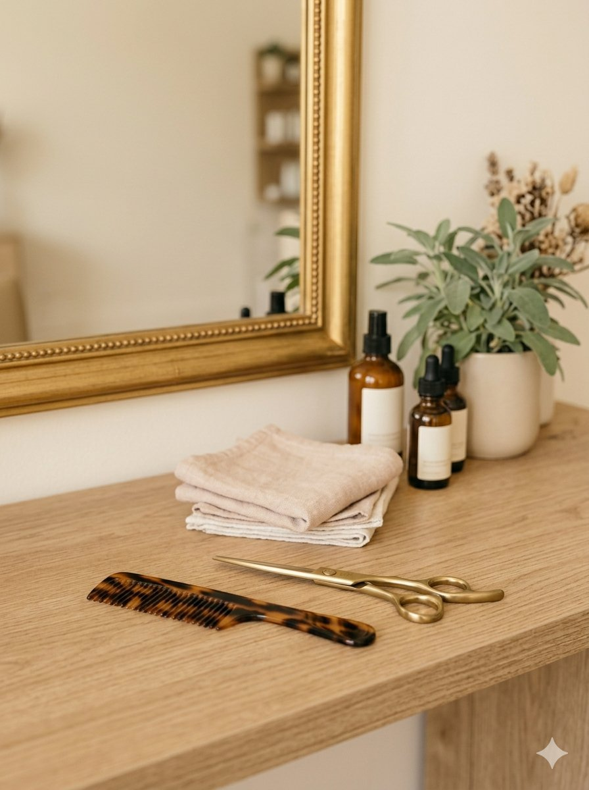
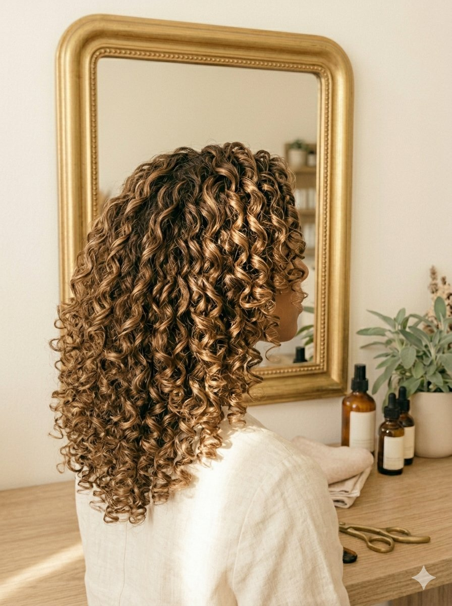
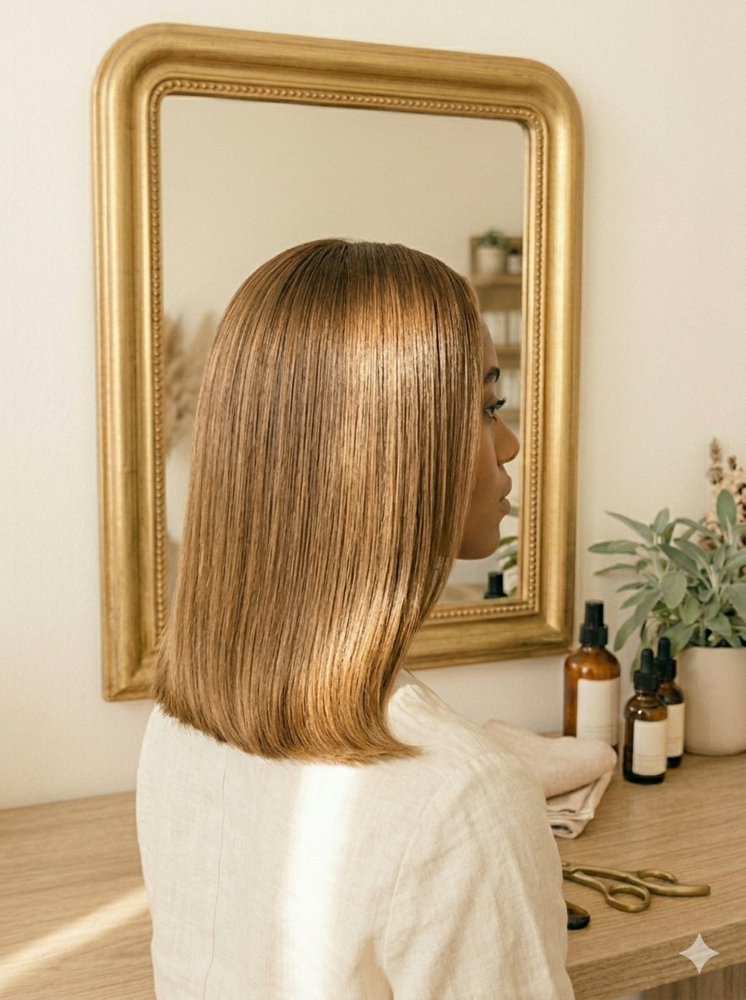

Soins & Traitements
Diagnostic, soins profonds, hydratation et rituels sur-mesure pour une fibre forte et brillante.
Voir les soinsSalon expert à Montgeron, spécialiste des cheveux afro, bouclés, texturés, défrisés et lisses. Un savoir-faire chaleureux, du temps pour vous, et un résultat dont vous serez fière.

Chez Anick Coiffure, on ne fait pas de différence : afro, bouclé, crépu, défrisé ou lisse, chaque cheveu a ses besoins. Anick prend le temps du diagnostic, écoute votre routine et vous conseille avec justesse — pour des résultats sains et durables.


De l'entretien régulier à la transformation complète, découvrez nos grandes familles de prestations.
Diagnostic, soins profonds, hydratation et rituels sur-mesure pour une fibre forte et brillante.
Voir les soinsCoupes adaptées à votre texture, brushing, wash & go et coiffages pour toutes les occasions.
Voir les coupesBox braids, vanilles, twists, tissages et extensions réalisés avec soin et précision.
Voir les tressesColoration, balayage, mèches et reflets pensés pour sublimer votre teint et votre style.
Voir les couleursDes avis vérifiés, laissés par celles qui poussent la porte du salon.
« Whaouuu whaouuu whaouuu. Je suis tellement reconnaissante d'avoir trouvé le salon d'Anick ! »
« Anick est une experte du cheveu, peu importe sa texture. Elle est aux petits soins, prend le temps qu'il faut pour vous satisfaire. »
« Salon trouvé en lisant les avis. Soin + coiffage, très satisfaite. Je n'ai plus à faire des kilomètres pour trouver un salon digne de ce nom. Je recommande ! »
Basée sur 87 avis Google laissés par notre clientèle fidèle.
Coupes, couleurs, tresses et coiffages réalisés au salon.



Appelez-nous directement ou envoyez votre demande de rendez-vous en ligne. Anick vous recontacte pour confirmer le créneau idéal.
01 69 05 15 03Réponse rapide pendant les horaires d'ouverture.
Remplir le formulaire Appeler le salon